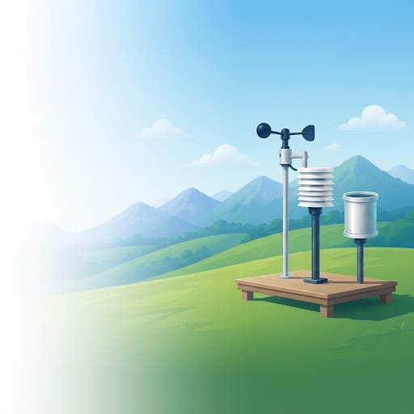

Datos Climáticos
Utilizamos fuentes oficiales y confiables que nos brindan información meteorológica en tiempo real y pronósticos actualizados sobre las condiciones del clima.
Datos Hidrológicos
Consultamos fuentes oficiales que suministran datos hidrológicos en tiempo real sobre los niveles, caudales y comportamiento de los ríos y sus estaciones de monitoreo.